こちらの記事で予告していたグラフアートのミルモグッズが、予定通り１月１８日（土）に発売されました。
通販サイト、および東京・名古屋・大阪の店舗販売が同じ日にスタートし、私も発売日に東京（池袋パルコ）の店舗でいくつかを購入しましたので、早速レポートしたいと思います。
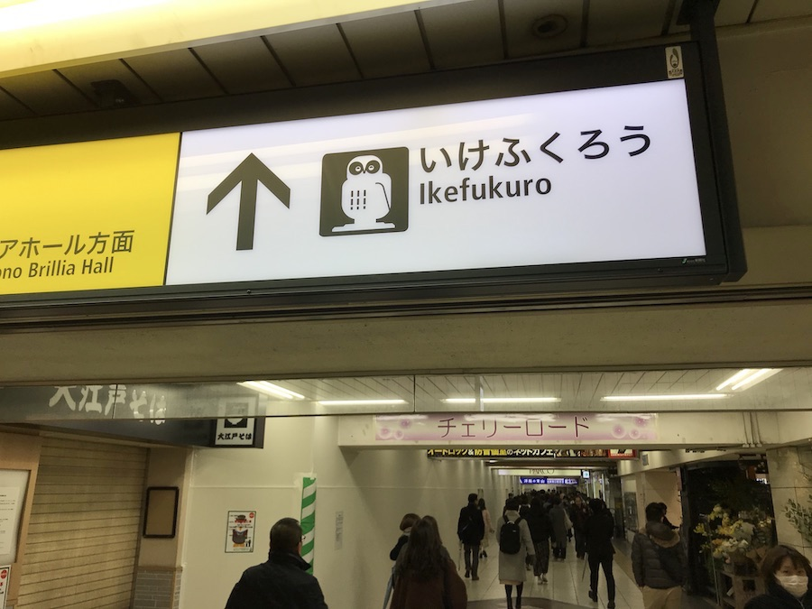
池袋のパルコがある「いけふくろう」方面へ。
池袋はいつ来ても地下通路の複雑さに圧倒されます(^^;
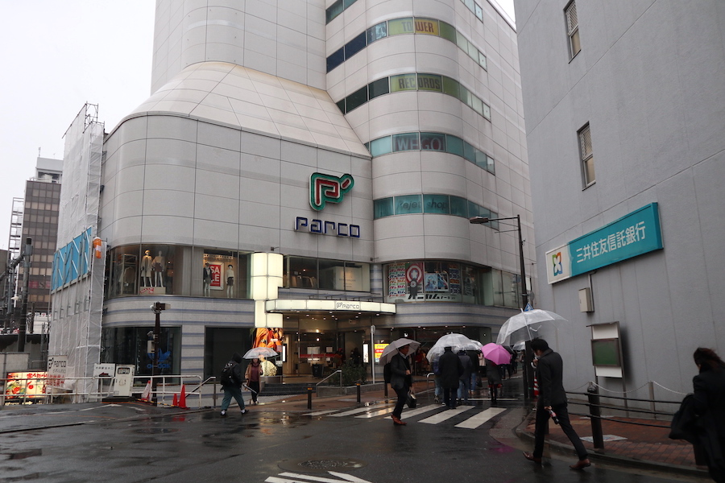
朝１０時にパルコに到着！
・・と思ったら別館のP'PARCOは１１時開店だということに着いてから気づきました(^◇^;)
雪の降る中で１時間待つのは辛いので、マックで時間をつぶすことに。。
マックでコーヒーを飲みながら、１０時にスタートした通販サイトを見てみると・・。
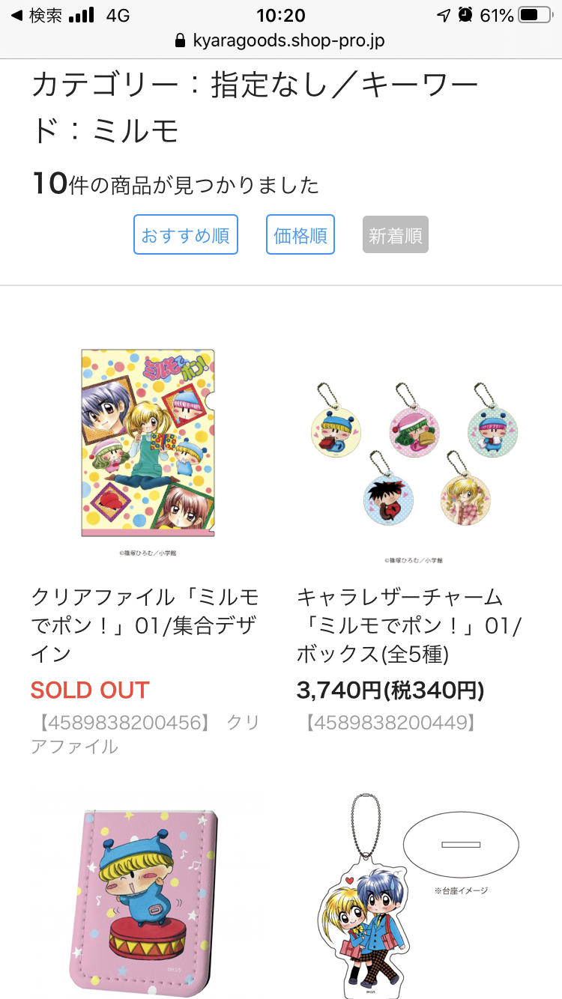
なななんとクリアファイルがすでにSOLD OUT！
クリアファイルなんてもっとも売り切れになりにくい商品だと思うのに。。いったい何があったんだろう？
（この記事を書いている１月１９日現在も売り切れのままでした）
その後大阪のなんば店でもハードケースとキャラパスの完売情報がツイッターで流れるなど、ミルモグッズの人気っぷりに日本全国のミルモファンがざわざわしていました。
そしていよいよ１１時。
池袋店のオープンの時間です。
グラフアートがある４階まで階段を上り、私はお店に２番手に到着！
（１番手はかゆちゃさんで、３番手は夏田みかんさん・・世界は狭いです笑）
２番手の到着なのでさすがに売り切れなどなく、まさに選びたい放題です。
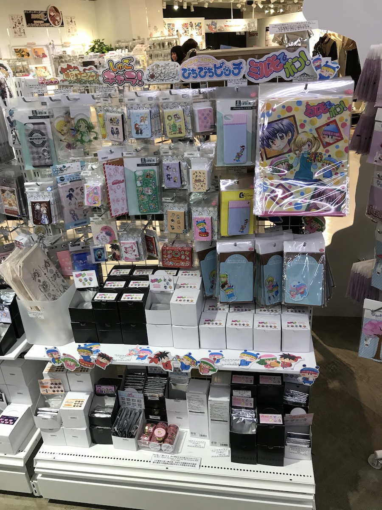
店内は妖精たちの切り抜きがいい感じにデコレーションされていて、店員さんのセンスを感じます。
今回私は以下の６点を買いました。
（値段が高いので全部買えなかったです^^;）
・クリアファイル（01/集合デザイン）
・レザーフセンブック（01/ミルモ）
・iPhone6/6s/7/8兼用ハードケース（01/ミルモ＆リルム＆ムルモ＆ヤシチ）
・キャラパス（01/ミルモ＆リルム＆ムルモ＆ヤシチ）
・アクリルスタンドキーホルダー（02/ミルモ＆ヤシチ＆ペータ）
・アクリルスタンドキーホルダー（03/ムルモ＆パピィ）
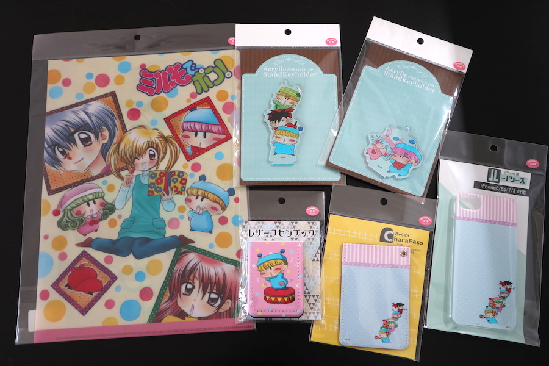
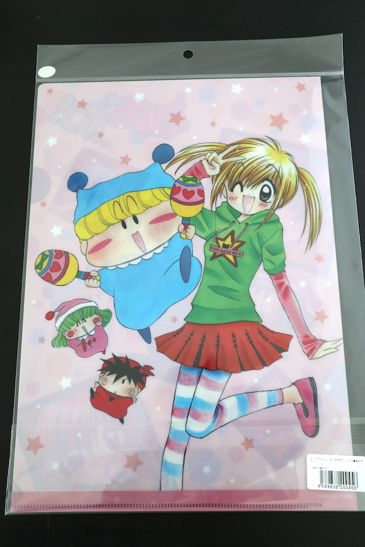
クリアファイルの裏側はこんな感じ。
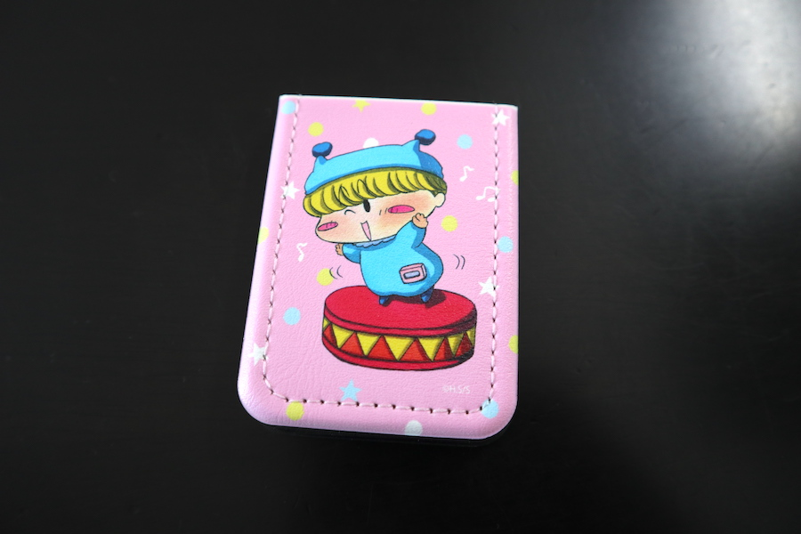
写真では伝わりづらいですが、すべすべした皮の質感が気持ちよいですよ。
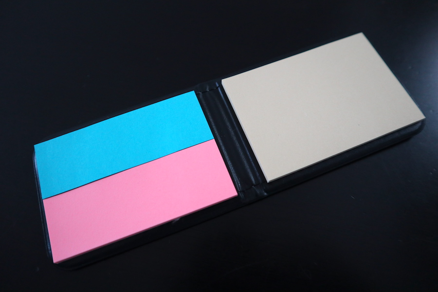
中の付箋紙です。
ミルモとリルムのような色の組み合わせですね(^^)
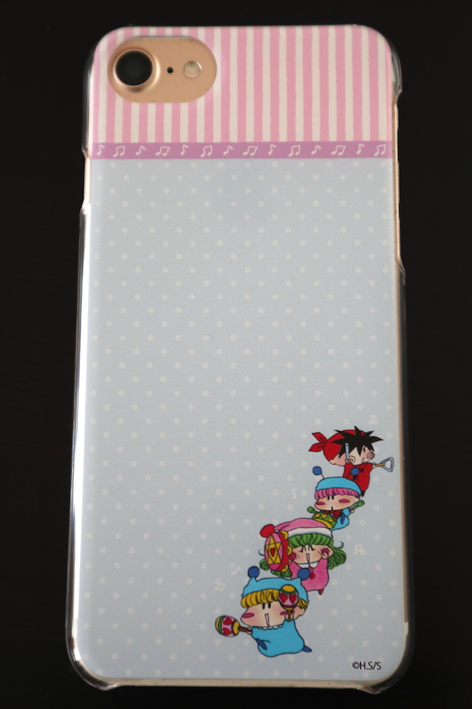
私のスマホはiPhone7なので、早速はめてみました。
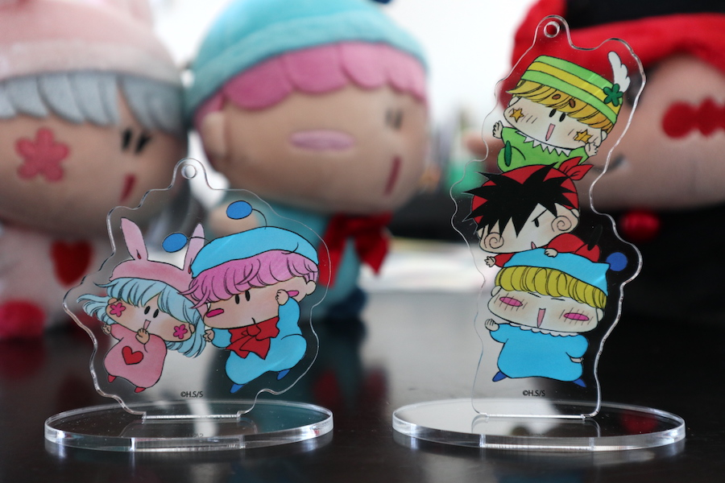
アクキースタンドの透明でクリアな質感がとてもオシャレです。
ムルパピファンならムルパピのアクキーは必ずゲットすべしです^^
予算の都合でグラフアートのグッズを全部紹介できませんでしたが、可能であれば続編として残りのグッズも紹介していきたいと思います。
今回の反響を通じて、ミルモ人気の高さがもっともっと広まってくれたらいいなぁ。
広まった先にはミルモ再アニメ化といった夢のような展開もあるかもしれませんね！
＜2020/3/2 追記＞
記録として、通販サイトの画像をお借りして今回発売されたグッズの情報を残しておきたいと思います。
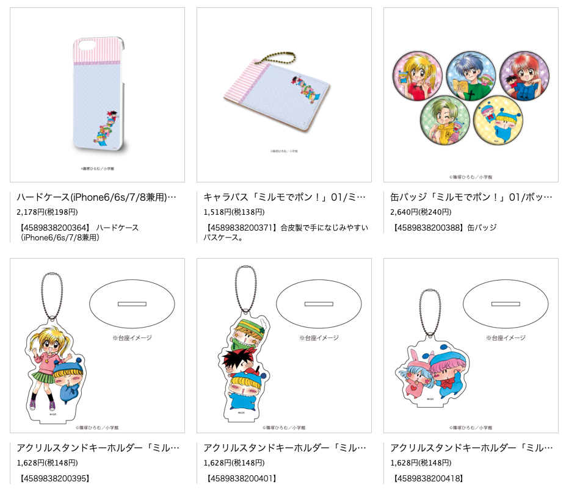
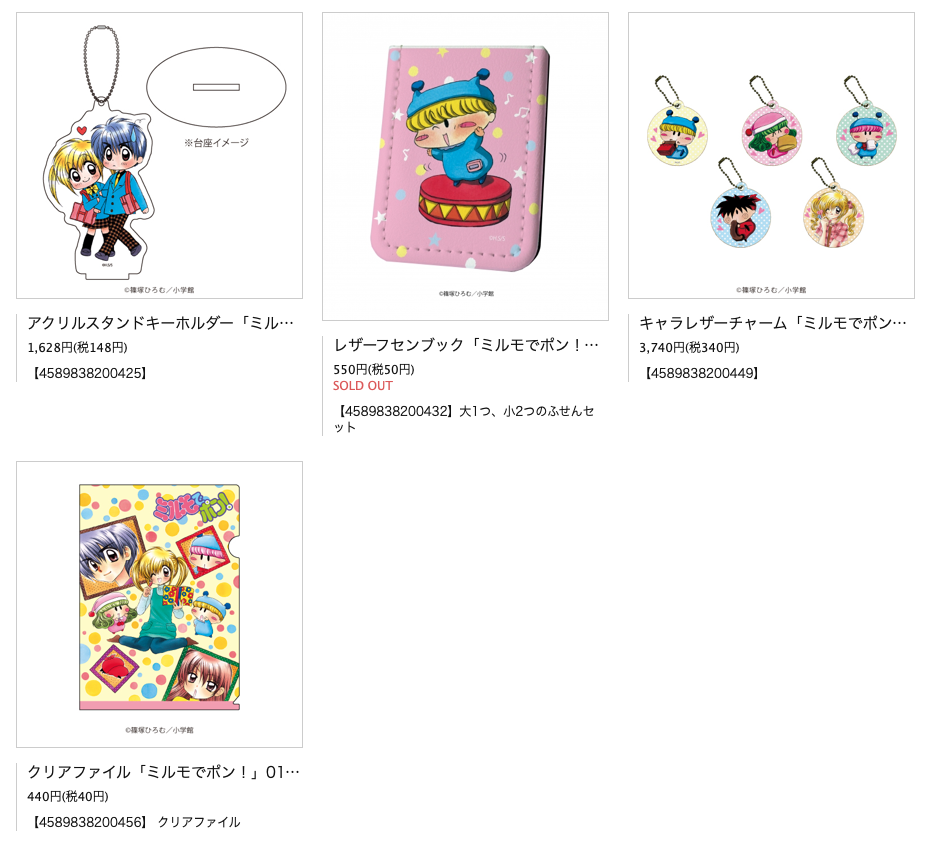
(2020/1/20)